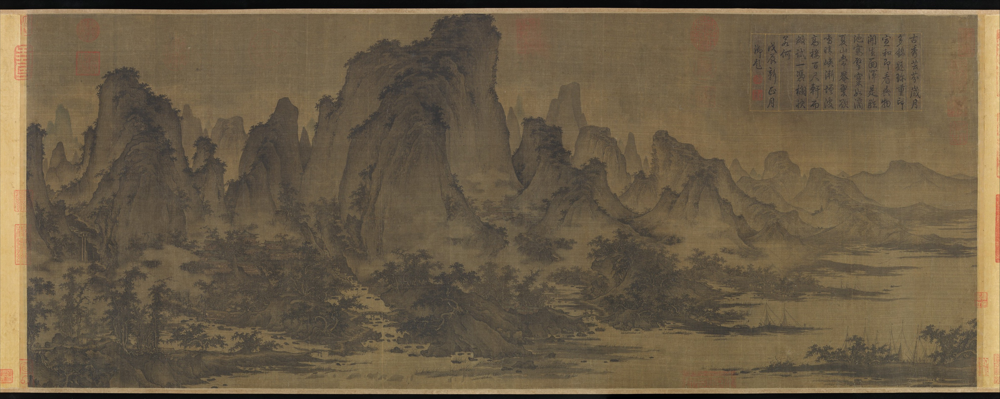
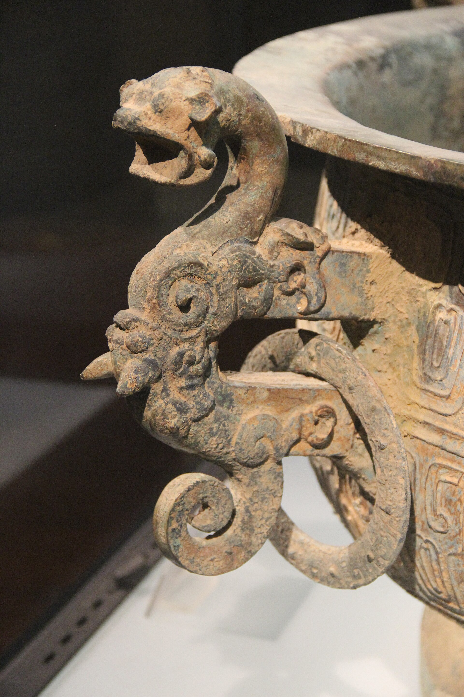
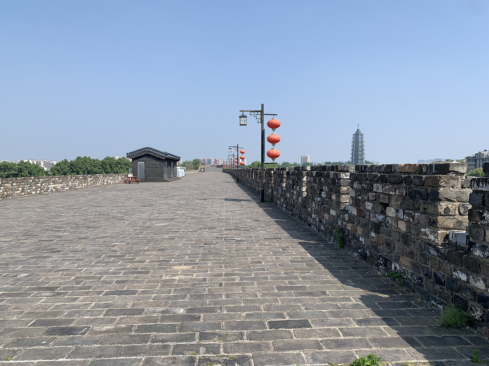
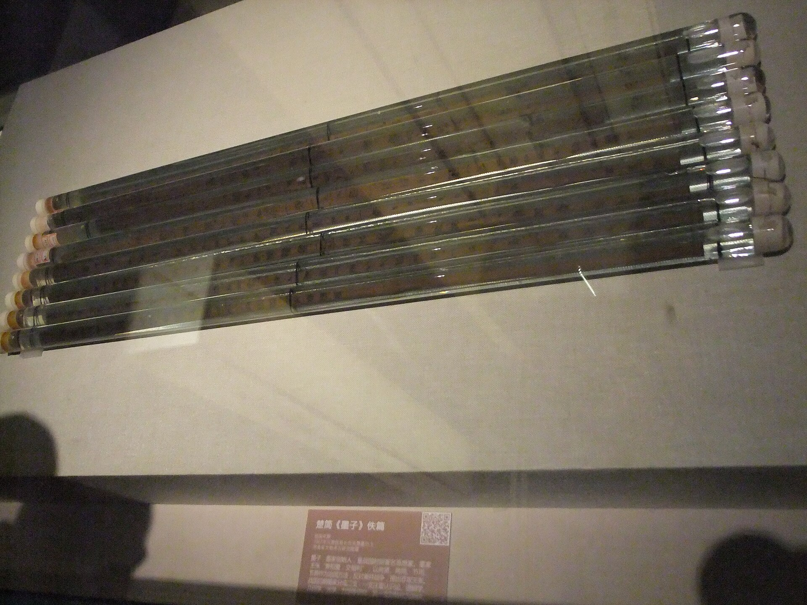
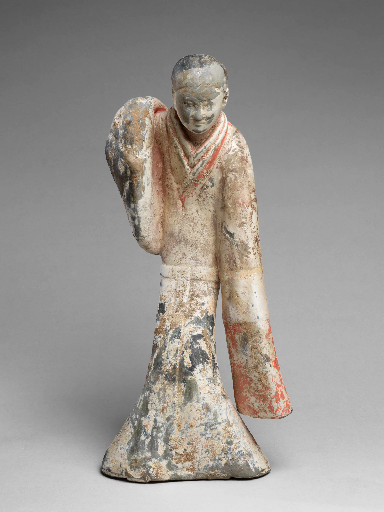

秦到今，抽一次。按出生规模抽，不是按今天还活着的人抽。
三国单独成桶，不并进魏晋。
成色分估、档、册
还没有给未来留下一步安排。
正在走的路
选一个重心。出身不会因此改变。
这一生写完了
时间已暂停 · 把现在留给以后

西汉陶舞俑，公元前二世纪「我生在」抽的是一次出生，不是现在还活着的人。年份以各代估计的出生规模为主。1949年之后压低一些，秦和三国有保底，不至于几乎抽不到。三国不并进魏晋：魏、蜀、吴由你落在的地方决定。每一处都写当时的名字，再写今天的哪里一带。吴的武昌在今天的湖北鄂州一带，不是武汉的武昌。古代死亡是对上预期寿命的模型，盖「估」。1953年之后只对照普查的量级，盖「册」，仍然不是公报里的某一个真人。
建业今江苏南京一带 · 吴
武昌今湖北鄂州一带 · 吴
江陵今湖北荆州一带 · 吴
番禺今广东广州一带 · 吴
成都今四川成都一带 · 蜀
汉中今陕西汉中一带 · 蜀
洛阳今河南洛阳一带 · 魏
邺今河北临漳一带 · 魏
许昌今河南许昌一带 · 魏
长安今陕西西安一带 · 魏
襄阳今湖北襄阳一带 · 魏
寿春今安徽寿县一带 · 魏
咸阳今陕西咸阳一带
长安今陕西西安一带
建康今江苏南京一带
平城今山西大同一带
东京今河南开封一带
临安今浙江杭州一带
大都今北京一带
幽州今北京一带
江宁今江苏南京一带
北平今北京一带
迪化今新疆乌鲁木齐一带
归绥今内蒙古呼和浩特一带
从前221年活到2026年预期写在模型里